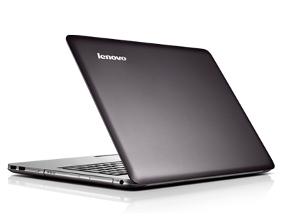
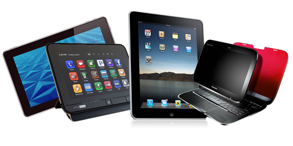

Champlain Computing, A First-Year's Guide
Welcome soon to be Champlain College student

Base Computer: When looking at hardware, it would be near impossible to make specific recommendations, as anything we were to list now will be out of date shortly. Additionally, a large part of picking out the perfect computer is not having any specific piece. Rather, it is finding the best deal on components as near to your ideal as possible. However with that said, there are two specific choices you should try your best to avoid. Those being Macbooks and Chromebooks.
Now If you absolutely require a dirt-cheap laptop, Chromebooks are your cheapest option. However they are notorious for selling your information, essentially little personal data miners. For an additional 50$ or so, you can go from a 200$ Chromebook up to a decent Asus or Acer. Both are good brands if you are looking for all the basic functionality of a laptop.
The above mentioned laptops will only be considered unsatisfactory if you are engaging in high-end film, graphic design, or gaming. The first two mentioned are typically rather specific purchases, and should be referenced to websites more suited to their respective artistic mediums. As for a high end gaming laptop, you should be looking at strong lenovo’s, such as the IdeaPad line. These will provide for you at a reasonable price.
Peripherals: Peripherals largely vary by person and are more so quality of life perks than necessities, so it really comes down to you as to how much you feel you should/want to spend. If you are running on a laptop. investing in a simple wireless mouse may be something you want to consider. Logitech is a consistently reliable brand that can supply you with all the basic products in a price range of cheap to mid-range. You should look to logitech for entry level mice, keyboard, headset, and speakers.
In addition to your typical peripherals mentioned above, investing in a portable hard drive and usb stick is a great decision for college life. You will be able to transport large amounts of data, projects and programs with you to campus and co worker computers.
As one more aside, if you are working in either a programming or art based field, it is extremely beneficial to use 2 monitors. This will allow you to use reference art/code while working. Buying monitors can be extremely expensive or cheap depending on how high quality you are looking for. Though from a strictly educational standpoint, there is little reason to go with an expensive purchase. Just remember, stick within your economic comfort zone!